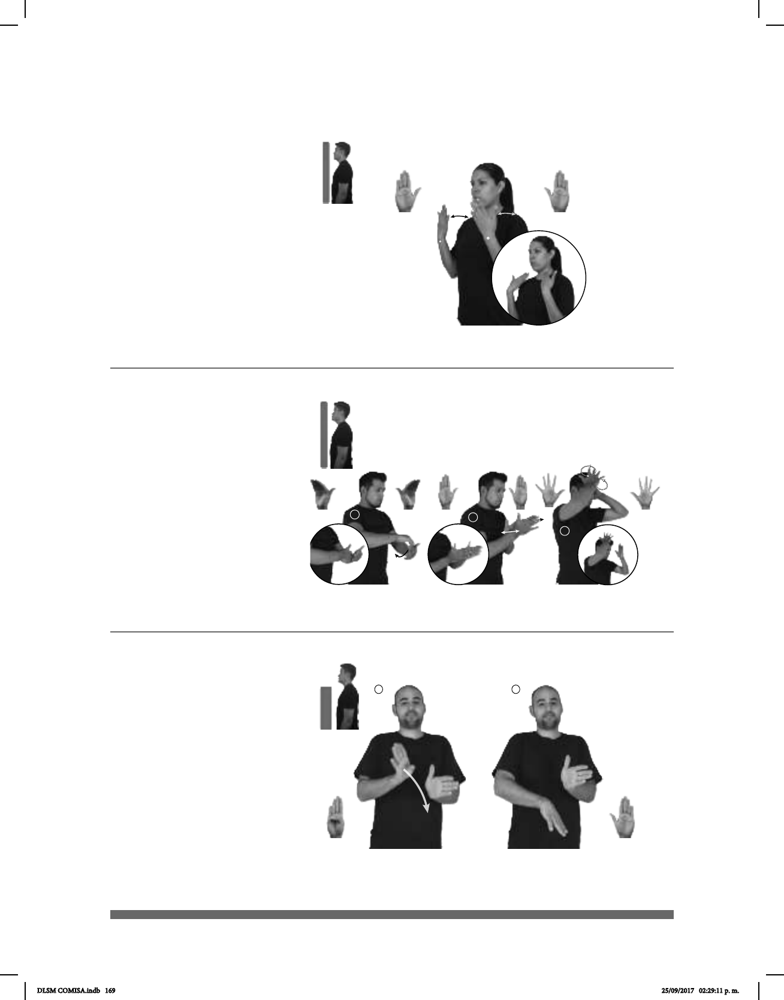

169
(B-P 175)
HOY DÍA FRESCO
El día está fresco.
Seña: SS
B-P.2
Palmas hacia adentro.
A la altura del cuello.
Las manos se mueven
solo la muñeca.
Labios
soplando.
Simula la acción de
abanicarse.
adj. Que es o está bien
ventilado y permite soportar el calor.
1
2
3
(B-P 176)
USA GEL PARA pro-TÚ PEINAR
Péinate usando el gel.
Seña: SC: I., II. y III. SB
I. MD y MB B-P.8; II. MD
y MB B-P.2; III. MD y MB 5.1
I. MD la palma inicia hacia
abajo y termina hacia adentro. MB palma
oblicua hacia adentro y hacia arriba; II. MD
y MB las palmas se encuentran frente a
frente; III. MD y MB palmas hacia el centro.
I.y II. MD y MB a la altura
del pecho; III. MD y MB a la altura de la
cabeza.
I. La MD se mueve formando
un arco hacia abajo detrás de MB; II. MD y
MB recto hacia enfrente alternadamente; III.
MD y MB se mueven formando círculos.
sust. m. Sustancia sólida, suave,
de aspecto gelatinoso y húmedo para la
jalea.
(B-P 177)
MUJER pos-SU GENITALES DIFERENTE HOMBRE
derecha
Los genitales de la mujer son diferentes a los del hombre.
Seña: SB
MD B-P.1, MB
B-P.2
MD la palma inicia
hacia afuera y termina hacia abajo.
MB palma hacia la derecha.
MD y MB a la altura
del pecho.
La MD se mueve de
la muñeca.
sust. m. Órganos
sexuales externos.
DLSM COMISA.indb 169 25/09/2017 02:29:11 p. m.